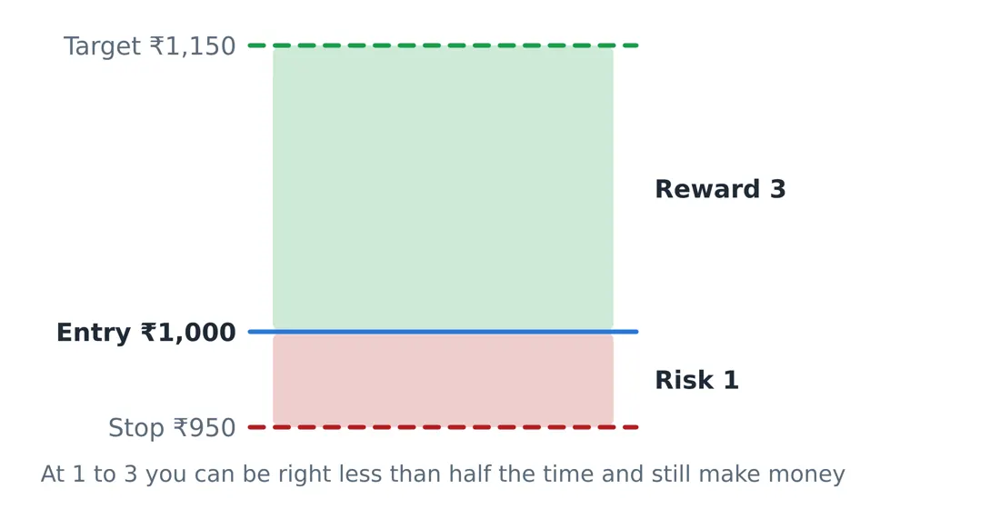

Library / MiyeeStockBuddy: The Complete Guide to Indian Markets
Part 16. Risk Management: The Part That Decides Everything
Everything before this part was about finding opportunities. This part is about surviving long enough for them to matter. It is the least interesting section of any trading book and the only one that reliably separates people who are still investing in ten years from people who are not.
16.1 Position Sizing: Risk a Fixed, Small Amount
Decide in advance what percentage of your capital you are willing to lose on a single idea. For most people that is one or two percent. Then size the position so that hitting your stop loss costs exactly that.
Position size = (Account x Risk percent) / (Entry price - Stop loss price) Account 5,00,000 Risk per trade 1% = 5,000 Entry 652 Stop loss 626 Risk per share 26 Position size = 5,000 / 26 = 192 shares = about 1,25,000 of stock |
Notice what this does. The position is a quarter of the account, which feels substantial, yet only one percent of the account is genuinely at risk. The stop loss decides the size; the size does not decide the stop loss.
Think of it like this If you risk 2 percent an idea, you can be wrong ten times in a row and still hold roughly 80 percent of your money, which is recoverable with a normal run of good trades. If you risk 25 percent an idea, four mistakes end you. And a run of four mistakes is not unusual. It happens to everyone, including people who are right most of the time. |
The reason small losses matter so much is that recovering from a large one is far harder than losing it was.
If you lose | You must gain this much just to get back to even |
|---|---|
10% | 11% |
25% | 33% |
50% | 100% |
75% | 300% |
90% | 900% |
This asymmetry is the whole argument for small position sizes. Losses hurt more than equivalent gains help, not psychologically but arithmetically. Avoiding the large loss is worth more than catching the large gain, and it is far more achievable.
16.2 Write the Stop Loss Before You Enter
A stop loss is the price at which you accept the idea was wrong and leave. Decide it before you buy, when you are calm and have no money at stake, because you will not decide it well afterwards.
- Place it where the setup is proved wrong: below the base, below the engulfing candle, below the trendline. Not at an amount that merely feels tolerable.
- Give it room using ATR, as Part 6.5 explained. Roughly 1.5 to 3 times ATR keeps ordinary daily noise from knocking you out.
- Then honour it. A stop loss you move away from as the price approaches is not a stop loss, it is a wish.
Careful here The most expensive habit in trading is turning a trade into an investment. The position falls through the stop, you decide the company is good anyway, and a two percent loss becomes a forty percent one. If you did not want it as an investment at the higher price, you do not want it as an investment now. |
16.3 Risk Against Reward
Before entering, compare what you lose if the stop is hit against what you reasonably expect to gain at your target.

Figure 47. Measure what you lose if the stop is hit against what you gain if the target is reached. Below 1 to 1.5 the trade is usually not worth taking, however good the story sounds.
Risk to reward | Win rate needed to break even | Verdict | |
|---|---|---|---|
1 to 1 | 50% | Hard, and costs make it harder | |
1 to 2 | 34% | Workable | |
1 to 3 | 25% | Comfortable. You can be wrong three times in four. | |
3 to 1 against you | 75% | Almost nobody sustains this | |
The rule to remember It is tempting to chase a high win rate, because being right feels good. Professionals chase a favourable ratio instead and accept being wrong often. A strategy that wins 35 percent of the time at 1 to 3 makes money; one that wins 80 percent of the time at 3 to 1 against does not. | |||
16.4 Rules Specific to Derivatives
Everything above applies to shares. Derivatives need five additional rules, because the failure modes are different.
1. Size by contract value, never by margin. Ask how much you are exposed to, not how much was blocked. A person with three lakh who takes three Nifty lots is exposed to fifty four lakh.
2. Never sell a naked option. Buy the wing. It costs some income and removes the outcome that ends accounts.
3. Keep cash spare for margin calls. Margins rise precisely when the market is falling and your position is losing. Being fully deployed is how a survivable loss becomes a forced exit at the worst price.
4. Respect expiry. Close in the money options rather than letting them be exercised. Never carry a stock option into expiry without knowing the delivery value.
5. Cap total derivative exposure. A sensible ceiling for someone learning is that the total premium at risk across all option positions should be an amount you could lose entirely this month without changing anything about your life.
16.5 The Checklist Before Any Trade
Question | If the answer is no |
|---|---|
Would I want to own this if the chart did not exist? | Reconsider. A chart is not a reason to own a bad company. |
Is ADX above 20, so a trend actually exists? | Stand aside. Below 20 the signals are unreliable. |
Did volume confirm the breakout or the pattern? | Treat it as a likely trap and wait. |
Have I written down my stop loss price? | Do not enter until you have. |
Is my risk to reward at least 1 to 1.5? | Skip it. Another opportunity will come. |
Is this position small enough that being wrong is survivable? | Reduce the size until it is. |
For options: can I state the max loss, max profit and break even? | You do not understand the position yet. Do not take it. |
For options: is implied volatility high or low right now? | Find out. It decides whether you should be buying or selling. |
Am I entering because of a plan, or because of a feeling? | Close the screen and come back tomorrow. |
16.6 The Trading Journal
Record every trade before you take it, not after. Four lines are enough: what you are buying, why, where the stop is, and what would make you exit early. Then, after it closes, one line on what actually happened.
After thirty trades this becomes the most valuable document you own, because it is the only honest record of how you behave. Memory rewrites losses into bad luck and wins into skill. A journal does not.
What people find in their own journals The losses cluster in a particular setup, or a particular time of day, or the trades taken within an hour of reading something exciting. The biggest losses are almost never the ones with a stop loss written down. They are the ones entered without a plan. The best trades were usually boring and were held longer than felt comfortable. Nobody believes any of this until they see it in their own handwriting about their own money. |
16.7 The Honest Summary
Fundamental analysis tells you what is worth owning. Technical analysis helps you decide when to act. Indicators summarise the chart, and every one of them describes the past. Derivatives give you leverage and precision, and they charge for both in ways that are easy to miss until they are not.
Risk management is the only part of this document fully within your control, and it is the part that decides whether you are still investing in ten years. Everything else is an opinion about the future. Position size is a fact about the present.
If you learn one thing from these hundred pages, learn to size positions so that being wrong is survivable. Everything else can be improved gradually. That one cannot be repaired afterwards.
© Vipin Nair. This guide is for reading online only. Copying, downloading, printing and redistribution are not permitted. For study and general reference; not legal, tax or investment advice.